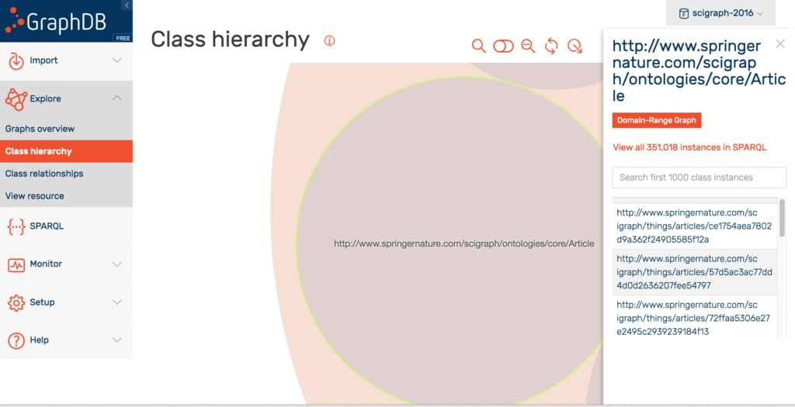

Exploring SciGraph data using JSON-LD, Elastic Search and Kibana
Hello there data lovers! In this post you can find some information on how to download and make some sense of the scholarly dataset recently made available by the Springer Nature SciGraph project, by using the freely available Elasticsearch suite of software.
A few weeks ago the SciGraph dataset was released (full disclosure: I’m part of the team who did that!). This is a high quality dataset containing metadata and abstracts about scientific articles published by Springer Nature, research grants related to them plus other classifications of this content.

This release of the dataset includes the last 5 years of content – that’s already an impressive 32 gigs of data you can get your hands on. So in this post I’m going to show how to do that, in particular by transforming the data from the RDF graph format they come with, into a JSON format which is more suited for application development and analytics.
We will be using two free-to-download products, GraphDB and Elasticsearch, so you’ll have to install them if you haven’t got them already. But no worries, that’s pretty straighforward, as you’ll see below.
1. Hello SciGraph Linked Data
First things first, we want to get hold of the SciGraph RDF datasets of course. That’s pretty easy, just head over to the SciGraph downloads page and get the following datasets:
- Ontologies: the main schema behind SciGraph.
- Articles – 2016: all the core articles metadata for one year.
- Grants: grants metadata related to those articles.
- Journals: full list of Springer Nature journal catalogue.
- Subjects: classification of research areas developed by Springer Nature.
That’s pretty much everything, only thing we’re getting only one year worth of articles as that’s enough for the purpose of this exercise (~300k articles from 2016).
Next up, we want to get a couple of other datasets SciGraph depends on:
- GRID: a catalogue of the world’s research organisations. Make sure you get both the ontology and one of the latest releases, within which you can find an RDF implementation too.
- Field Of Research codes: another classification scheme used in SciGraph, developed by the Australian and New Zealand Standard Research Classification organization.
That’s it! Time for a cup of coffee.
2. Python to the help
We will be doing a bit of data manipulation in the next sections and Python is a great language for that sort of thing. Here’s what we need to get going:
- Python. Make sure you have Python installed and also Pip, the Python package manager (any Python version above 2.7 should be ok).
- GitHub project. I’ve created a few scripts for this tutorial, so head over to the hello-scigraph project on GitHub and download it to your computer. Note: the project contains all the Python scripts needed to complete this tutorial, but of course you should feel free to modify them or write from scratch if you fancy it!
- Libraries. Install all the dependencies for the hello-scigraph project to run. You can do that by cd-ing into the project folder and running
pip install -r requirements.txt(ideally within a virtual environment, but that’s up to you).
3. Loading the data into GraphDB
So, you should have by now 8 different files containing data (after step 1 above). Make sure they’re all in the same folder and that all of them have been unzipped (if needed), then head over to the GraphDB website and download the free version of the triplestore (you may have to sign up first).
The online documentation for GraphDB is pretty good, so it should be easy to get it up and running. In essence, you have to do the following steps:
- Launch the application: for me, on a mac, I just had to double click the GraphDB icon – nice!
- Create a new repository: this is the equivalent of a database within the triplestore. Call this repo “scigraph-2016” so that we’re all synced for the following steps.
Next thing, we want a script to load our RDF files into this empty repository. So cd into the directory containg the GitHub project (from step 2) and run the following command:
python -m hello-scigraph.loadGraphDB ~/scigraph-downloads/
The “loadGraphDB” script goes through all RDF files in the “scigraph-downloads” directory and loads them into the scigraph-2016 repository (note: you must replace “scigraph-downloads” with the actual path to the folder you downloaded content in step 1 above).
So, to recap: this script is now loading more than 35 million triples into your local graph database. Don’t be surprised if it’ll take some time (in particular the ‘articles-2016’ dataset, by far the biggest) so it’s time to take a break or do something else.
Once the process it’s finished, you should be able to explore your data via the GraphDB workbench. It’ll look something like this:

4. Creating an Elasticsearch index
We’re almost there. Let’s head over to the Elasticsearch website and download it. Elasticsearch is a powerful, distributed, JSON-based search and analytics engine so we’ll be using it to build an analytics dashboard for the SciGraph data.
Make sure Elastic is running (run bin/elasticsearch (or bin\elasticsearch.bat on Windows), then cd into the hello-scigraph Python project (from step 2) in order to run the following script:
python -m hello-scigraph.loadElastic
If you take a look at the source code, you’ll see that the script does the following:
- Articles loading: extracts articles references from GraphDB in batches of 200.
- Articles metadata extraction: for each article, we pull out all relevant metadata (e.g. title, DOI, authors) plus related information (e.g. author GRID organizations, geo locations, funding info etc..).
- Articles metadata simplification: some intermediate nodes coming from the orginal RDF graph are dropped and replaced with a flatter structure which uses a a temporary dummy schema (
prefix es: <http://elastic-index.scigraph.com/>It doesn’t matter what we call that schema, but what’s important is to that we want to simplify the data we put into the Elastic search index. That’s because while the Graph layer is supposed to facilitate data integration and hence it benefits from a rich semantic representation of information, the search layer is more geared towards performance and retrieval hence a leaner information structure can dramatically speed things up there. - JSON-LD transformation: the simplified RDF data structure is serialized as JSON-LD – one of the many serializations available for RDF. JSON-LD is of course valid JSON, meaning that we can put that into Elastic right away. This is a bit of a shortcut actually, in fact for a more fine-grained control of how the JSON looks like, it’s probably better to transform the data into JSON using some ad-hoc mechanism. But for the purpose of this tutorial it’s more than enough.
- Elastic index creation. Finally, we can load the data into an Elastic index called – guess what – “hello-scigraph”.
Two more things to point out:
- Long queries. The Python script enforces a 60 seconds time-out on the GraphDB queries, so in case things go wrong with some articles data the script should keep running.
- Memory issues. The script stops for 10 seconds after each batch of 200 articles (
time.sleep(10)). Had to do this to prevent GraphDB on my laptop from running out of memory. Time to catch some breath!
That’s it! Time for another break now. A pretty long one actually – loading all the data took around 10 hours on my (rather averaged spec’ed) laptop so you may want to do that overnight or get hold of a faster machine/server.
Eventually, once the loading script is finished, you can issue this command from the command line to see how much data you’ve loaded into the Elastic index “hello-scigraph”. Bravo!
curl -XGET 'localhost:9200/_cat/indices/'
5. Analyzing the data with Kibana
Loading the data in Elastic already opens up a number of possibilites – check out the search APIs for some ideas – however there’s an even quicker way to analyze the data: Kibana. Kibana is another free product in the Elastic Search suite, which provides an extensible user interface for configuring and managing all aspects of the Elastic Stack.
So let’s get started with Kibana: download it and set it up using the online instructions, then point your browser at http://localhost:5601 .
You’ll get to the Kibana dashboard which shows the index we just created. Here you can perform any kind of searches and see the raw data as JSON.
What’s even more interesting is the visualization tab. Results of searches can be rendered as line chart, pie charts etc.. and more dimensions can be added via ‘buckets’. See below for some quick examples, but really, the possibilities are endless!
- Search the raw data
{kind=link}
- Search + Date histogram
{kind=link}
- Search + Journal Buckets
{kind=link}
- Search + Date and Journal buckets
{kind=link}
Conclusion
This post should have given you enough to realise that:
- The SciGraph dataset contain an impressive amount of high-quality scholarly publications metadata which can be used for things like literature search, research statistics etc..
- Even though you’re not familiar with Linked Data and the RDF family of languages, it’s not hard to get going with a triplestore and then transform the data into a more widely used format like JSON.
- Finally, Elasticsearch and especially Kibana are fantastic tools for data analysis and exploration! Needless to say, in this post I’ve just scratched the surface of what could be done with it.
Hope this was fun, any questions or comments, you know the drill :-)